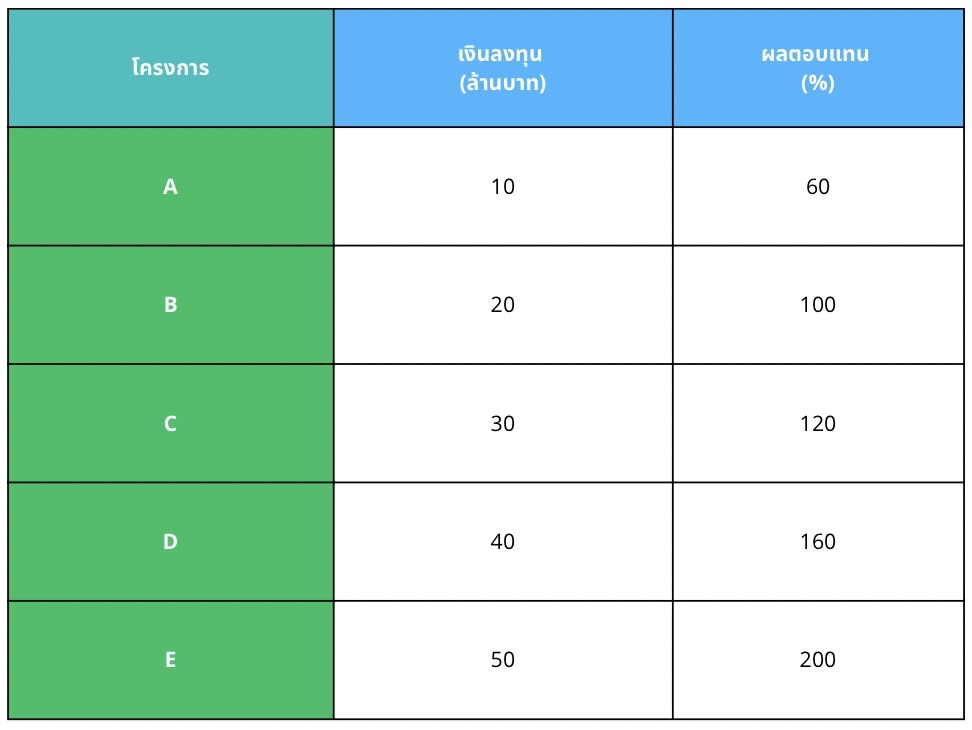
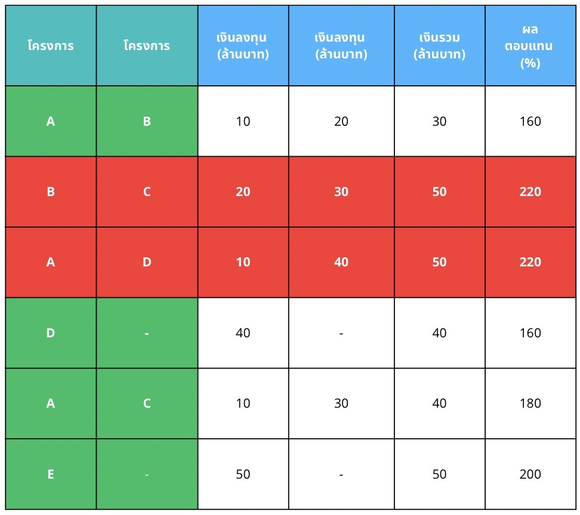
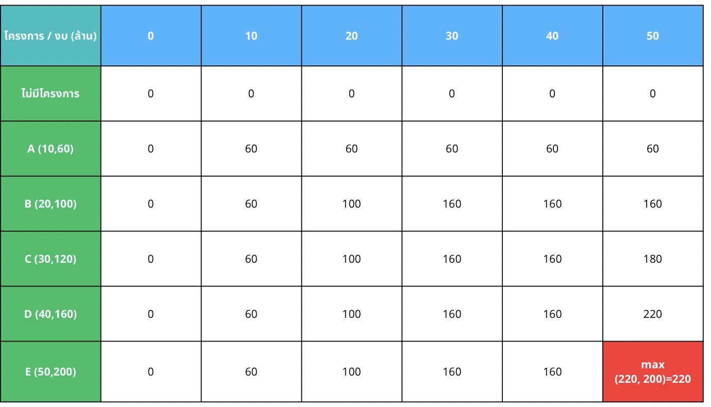

Business Problem
ปัญหาการจัดสรรงบประมาณ
ปัญหาอัลกอริทึมเชิงธุรกิจที่เกี่ยวกับ การจัดสรรงบประมาณ เป็นปัญหาที่พบได้บ่อยในหลายองค์กร โดยเฉพาะเมื่อมีทรัพยากรจำกัดและต้องการได้ผลลัพธ์สูงสุด
โดยมีปัญหาที่สำคัญ คือ งบประมาณมีจำกัด ทำให้ต้องตัดสินใจเลือกเฉพาะบางทางเลือกที่คุ้มค่าที่สุด
ประโยชน์ของการจัดสรรงบประมาณ คือ เพิ่มประสิทธิภาพในการใช้ทรัพยากร
โดยเลือกใช้งบประมาณให้เกิดผลตอบแทนสูงสุด ไม่สูญเปล่ากับทางเลือกที่ไม่คุ้ม, ช่วยในการตัดสินใจอย่างเป็นระบบ และ
ลดต้นทุนทางธุรกิจโดยเลือกแผนที่มีต้นทุนน้อย
แต่ให้ผลลัพธ์ดี ช่วยประหยัดงบประมาณภาพรวมขององค์กร
Algorithm Comparison
Brute Force
เป็นวิธีการแก้ปัญหาโดยการ ลองทุกความเป็นไปได้ทั้งหมดอย่างไม่เลือกวิธี เพื่อหาคำตอบที่ดีที่สุด
โดยไม่ใช้เทคนิคการลดจำนวนกรณีหรือเพิ่มประสิทธิภาพใด ๆ ซึ้งใช้ได้กับปัญหาหลายประเภทและให้คำตอบที่ถูกต้องแน่นอน ใช้เวลาและทรัพยากรมาก
แต่มีข้อเสีย ดังนี้ ไม่เหมาะกับปัญหาขนาดใหญ่ และ มีความซับซ้อนเป็น 𝑂(2^𝑛) หรือมากกว่านั้นในบางกรณี
ตัวอย่าง Brute Force สำหรับการจัดสรรงบประมาณ
สมมุติสถานการณ์ว่า :
นายสมหมายเป็นเจ้าของบริษัทอสังหาริมทรัพย์
ตอนนี้บริษัทมีงบประมาณในการพัฒนาโครงการรวมทั้งสิ้น 50 ล้านบาท
มีโครงการบ้านที่สามารถลงทุนได้ทั้งหมด 5 โครงการ โดยแต่ละโครงการใช้เงินลงทุนและให้ผลตอบแทนที่คาดหวังต่างกัน ดังนี้:

เราจะลองทุก subset ของโครงการทั้ง 5 ชุด ซึ้งต้องลองทั้งหมด 2^5 หรือ 32 ครั้ง
จากนั้นจะเลือกชุดที่รวมงบ ≤ 50 และมีคะแนนคุ้มค่าสูงที่สุด
ซึ้งสามารถเขียนตารางแสดงตัวอย่างของตัวเลือก ดังนี้:

ตัวอย่างชุดที่เป็นไปได้:
• ชุด {A, B} ใช้งบ 10+20 = 30 ให้ผลตอบแทน 160%
• ชุด {B, C} ใช้งบ 20+30 = 50 ให้ผลตอบแทน 220%
• ชุด {A, D} ใช้งบ 10+40 = 50 ให้ผลตอบแทน 220%
• ชุด {D} ใช้งบ 40 ให้ผลตอบแทน 160%
• ชุด {A, C} ใช้งบ 10+30 = 40 ให้ผลตอบแทน 180%
• ชุด {E} ใช้งบ 50 ให้ผลตอบแทน 200%
ผลลัพธ์ดีที่สุด:
ชุด {B, C} และ ชุด {A, D} ให้ผลตอบแทนรวม 220 % และใช้งบพอดี 50 ล้านบาท
Code ใช้เปรียบเทียบ
Line |
Code |
1
2
3
4
5
6
7
8
9
10
11
12
13
14
15
16
17
18
19
20
21
22
23
24
25
26
27
28
29
30
|
import time
import pandas as pd
def brute_force(filename, budget_million):
df = pd.read_excel(filename)
names = df['โครงการ'].tolist()
costs = df['งบประมาณ (ล้านบาท)'].tolist()
profits = df['ผลตอบแทน (%)'].tolist()
n = len(costs)
budget = budget_million
best_profit = 0
best_combo = []
start_time = time.time() # เริ่มจับเวลา
for i in range(1, 2 ** n):
selected = [bool(i & (1 << j)) for j in range(n)]
total_cost = sum(costs[j] for j in range(n) if selected[j])
total_profit = sum(profits[j] for j in range(n) if selected[j])
if total_cost <= budget and total_profit > best_profit:
best_profit = total_profit
best_combo = selected
end_time = time.time() # จบจับเวลา
elapsed_time = end_time - start_time
selected_projects = [names[i] for i in range(n) if best_combo[i]]
print("=== Brute Force Method ===")
print("ผลตอบแทนสูงสุด:", best_profit, "%")
print("โครงการที่เลือก:", selected_projects)
print(f"ใช้เวลาในการคำนวณ: {elapsed_time:.6f} วินาที")
# ตัวอย่างการเรียกใช้งาน
brute_force("data_used for example.xlsx", 10000)
#brute_force("data_for test.xlsx", 10)
|
Algorithm Present
Dynamic Programming
คือ เทคนิคการแก้ปัญหาที่ซับซ้อนโดยการแบ่งปัญหาออกเป็น ปัญหาย่อยซ้ำ ๆ แล้ว เก็บผลลัพธ์ของปัญหาย่อยไว้ เพื่อไม่ต้องคำนวณซ้ำ
ทำให้ประหยัดเวลาและมีประสิทธิภาพสูงกว่าวิธี Brute Force มากประหยัดเวลาในการคำนวณ แก้ปัญหาได้รวดเร็วแม้ในกรณีข้อมูลจำนวนมาก
ตัวอย่าง Dynamic Programming สำหรับการจัดสรรงบประมาณ
สมมุติสถานการณ์ว่า :
นายสมหมายเป็นเจ้าของบริษัทอสังหาริมทรัพย์
ตอนนี้บริษัทมีงบประมาณในการพัฒนาโครงการรวมทั้งสิ้น 50 ล้านบาท
มีโครงการบ้านที่สามารถลงทุนได้ทั้งหมด 5 โครงการ โดยแต่ละโครงการใช้เงินลงทุนและให้ผลตอบแทนที่คาดหวังต่างกัน ดังนี้:
1.ใช้เทคนิค Dynamic Programming
โดยสร้างตาราง dp[i][j]
• i คือโครงการที่พิจารณา (A ถึง E)
• j คืองบประมาณที่มี (0 ถึง 50 ล้านบาท)
• dp[i][j] คือ “ค่าสูงสุดที่ได้” เมื่อพิจารณาโครงการ A ถึง E โดยใช้งบไม่เกิน j
2.ใช้การวนลูปแบบ Bottom-Up
•ถ้าโครงการนั้นงบเกินให้ใช้ค่าเดิมจากแถวบน
•ถ้างบพอให้เลือก max (ไม่เลือกโครงการนี้, เลือกโครงการนี้)
3.จากนั้นเพิ่มโครงการในการคำนวณไปเรื่อยๆ
จะได้ตาราง ดังต่อไปนี้

สามารถสรุปได้ว่า คะแนนความคุ้มค่าสูงสุดที่สามารถทำได้ในงบ 50 ล้าน = 220 %
ได้จากการเลือก:
ชุด {B, C} และ ชุด {A, D} ให้ผลตอบแทนรวม 220 % และใช้งบพอดี 50 ล้านบาท
Code ใช้เปรียบเทียบ
Line |
Code |
1
2
3
4
5
6
7
8
9
10
11
12
13
14
15
16
17
18
19
20
21
22
23
24
25
26
27
28
29
30
31
32
33
34
35
36
|
import pandas as pd
import time
def dp(filename, budget_million):
df = pd.read_excel(filename)
names = df['โครงการ'].tolist()
costs = df['งบประมาณ (ล้านบาท)'].tolist()
profits = df['ผลตอบแทน (%)'].tolist()
n = len(costs)
W = int(budget_million)
dp = [[0] * (W + 1) for _ in range(n + 1)]
start_time = time.time() # เริ่มจับเวลา
for i in range(1, n + 1):
for w in range(W + 1):
if costs[i - 1] <= w:
dp[i][w] = max(dp[i - 1][w],
dp[i - 1][int(w - costs[i - 1])] + profits[i - 1])
else:
dp[i][w] = dp[i - 1][w]
w = W
selected = []
for i in range(n, 0, -1):
if dp[i][w] != dp[i - 1][w]:
selected.append(i - 1)
w -= int(costs[i - 1])
end_time = time.time() # จบจับเวลา
elapsed_time = end_time - start_time
selected.reverse()
selected_projects = [names[i] for i in selected]
print("=== Dynamic Programming Method ===")
print("ผลตอบแทนสูงสุด:", dp[n][W], "%")
print("โครงการที่เลือก:", selected_projects)
print(f"ใช้เวลาในการคำนวณ: {elapsed_time:.6f} วินาที")
# ตัวอย่างการเรียกใช้งาน
dp("data_used for example.xlsx", 10000)
#dp("data_for test.xlsx", 40000)
|
Application
จากผลการทดลองพบว่าแม้ว่าผลลัพธ์การทำงานจะเหมือนกัน แต่ประสิทธิภาพการทำงานต่างกัน
โดยเวลาที่ใช้ในการหาคำตอบ* ด้วย Brute Force ใช้เวลา 55 ไมโครวินาที
ในขณะที่ Dynamic Programming ใช้เวลา 31 ไมโครวินาที
และเมื่อเพิ่มจำนวนโครงการ (column) เข้าไป จะพบว่า เมื่อข้อมูลมากขึ้นเท่าไร DP ก็ยิ่งทำงานได้เร็วขึ้น ซึ้งเป็นอีกหนึ่งจุดเด่นที่ DP สามารถทำงานได้รวดเร็ว
เหมาะกับการหาคำตอบของข้อมูลจำนวนมาก ต่างจาก Brute Force ที่เมื่อเพิ่มโครงการเข้าไปแล้วจะทำงานช้าลง
ดังนั้น การใช้ DP ใช้เวลาน้อยกว่ามาก ทำให้สามารถจัดสรรงบประมาณได้อย่างรวดเร็ว ถูกต้อง และมีประสิทธิภาพ
*file data_used for example.xlsx
ประโยชน์ทางธุรกิจ
การใช้ Dynamic Programming ในการจัดสรรงบประมาณในบริษัทนั้น มีความจำเป็นและเป็นประโยชน์มาก
โดยเฉพาะในกรณีที่มีโครงการหรือทางเลือกจำนวนมาก และต้องการ จัดสรรงบประมาณอย่างมีประสิทธิภาพที่สุด ภายใต้ข้อจำกัด เช่น งบประมาณจำกัด ทรัพยากรจำกัด
หรือระยะเวลา ตัวอย่างการใช้ประโยชน์ทางธุรกิจ
1.หลีกเลี่ยงการคำนวณซ้ำซ้อน : มีการบันทึกผลลัพธ์ของการคำนวณก่อนหน้าไว้
2.เหมาะกับการขยายตัวของข้อมูล: ถ้าจำนวนโครงการเพิ่มขึ้น เช่น จาก 5 เป็น 50 โครงการ Brute Force จะทำงานไม่ได้เลย แต่ DP ทำได้ภายในเวลาเหมาะสมและรวดเร็วกว่า
3.สามารถตอบคำถาม "ทางเลือกที่ดีที่สุดคืออะไร" ได้ชัดเจน :DP ไม่เพียงบอกว่าคะแนนสูงสุดเท่าไร แต่ยังสามารถบอกว่า ควรเลือกโครงการไหนบ้างอีกด้วย
Resource file
data_used for example.xlsx
data_for test.xlsx
.gif)
.gif)